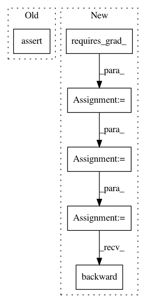

f7b10102a3a0b08272634347ff3a65efd3df18ce,test/functions/test_root_decomposition.py,TestRootDecomposition,test_root_decomposition,#TestRootDecomposition#,31
Before Change
// Forward
root = NonLazyTensor(self.mat).root_decomposition().root.evaluate()
res = root.matmul(root.transpose(-1, -2))
self.assertTrue(approx_equal(res, self.mat))
// Backward
res.trace().backward()
self.mat_clone.trace().backward()
After Change
return mat
def test_root_decomposition(self):
mat = self._create_mat().detach().requires_grad_(True)
mat_clone = mat.detach().clone().requires_grad_(True)
// Forward
root = NonLazyTensor(mat).root_decomposition().root.evaluate()
res = root.matmul(root.transpose(-1, -2))
self.assertAllClose(res, mat)
// Backward
sum([mat.trace() for mat in res.view(-1, mat.size(-2), mat.size(-1))]).backward()
sum([mat.trace() for mat in mat_clone.view(-1, mat.size(-2), mat.size(-1))]).backward()
self.assertAllClose(mat.grad, mat_clone.grad)
def test_root_inv_decomposition(self):
mat = self._create_mat().detach().requires_grad_(True)
In pattern: SUPERPATTERN
Frequency: 3
Non-data size: 6
Instances
Project Name: cornellius-gp/gpytorch
Commit Name: f7b10102a3a0b08272634347ff3a65efd3df18ce
Time: 2019-04-04
Author: gpleiss@gmail.com
File Name: test/functions/test_root_decomposition.py
Class Name: TestRootDecomposition
Method Name: test_root_decomposition
Project Name: pytorch/pytorch
Commit Name: 33e3deed4f0d2df250b4231748d4c5a392b84815
Time: 2021-03-15
Author: xiaobing.zhang@intel.com
File Name: test/test_mkldnn.py
Class Name: TestMkldnn
Method Name: test_relu
Project Name: pytorch/pytorch
Commit Name: 33e3deed4f0d2df250b4231748d4c5a392b84815
Time: 2021-03-15
Author: xiaobing.zhang@intel.com
File Name: test/test_mkldnn.py
Class Name: TestMkldnn
Method Name: test_relu_